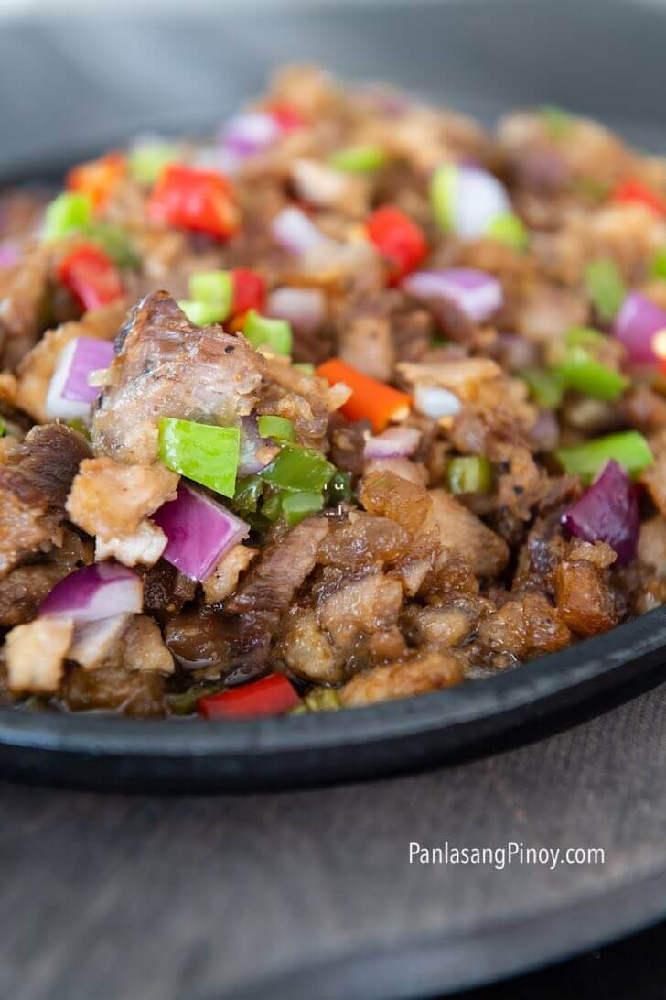

Sizzling Sisig

Cooking this Sizzling Sisig version requires you to first make lechon kawali. Now, you know where the crispiness comes from. I prepared the pork by boiling it for 1 hour. You can add bay leaves and other spices while boiling, it is up to you.
The first thing to do is deep-fry the boiled pork until the skin turns golden brown and crispy. Use a deep fryer to make the process easier. A deep cooking pot with cover works too. The cooking duration varies. Check the pork every few minutes. Be extra careful during this step.
Ingridients
- 1 ½ lbs. pork belly
- ½ cup Ladys Choice Mayonnaise
- 2 pieces onion
- 4 pieces Thai chili pepper
- 2 pieces long green pepper
- 16 grams Knorr SavorRich Pork
- ½ teaspoon ground black pepper
- 2 tablespoons soy sauce
- ¼ cup margarine
- 2 cups cooking oil
Instructions
- Heat oil in a deep cooking pot or deep fryer. Fry the boiled pork belly until golden brown and crispy. Chop the crispy pork belly into small pieces. Set aside.
- Heat half of the margarine in a pan. Sauté half of the onions until soft. Add chopped pork. Saute for 30 seconds.
- Add Knorr SavorRich. Stir and then add chili peppers and season with ground black pepper and soy sauce. Cook for 1 minute.
- Add Ladys Choice Mayonnaise. Stir and add remaining onion. Set aside.
- Heat a metal plate (sizzling plate) on a stovetop. Melt remaining margarine. Transfer the crispy pork sisig into the metal plate. Let it stay for 30 seconds.
- Serve with warm rice and your favorite beverage. Enjoy!